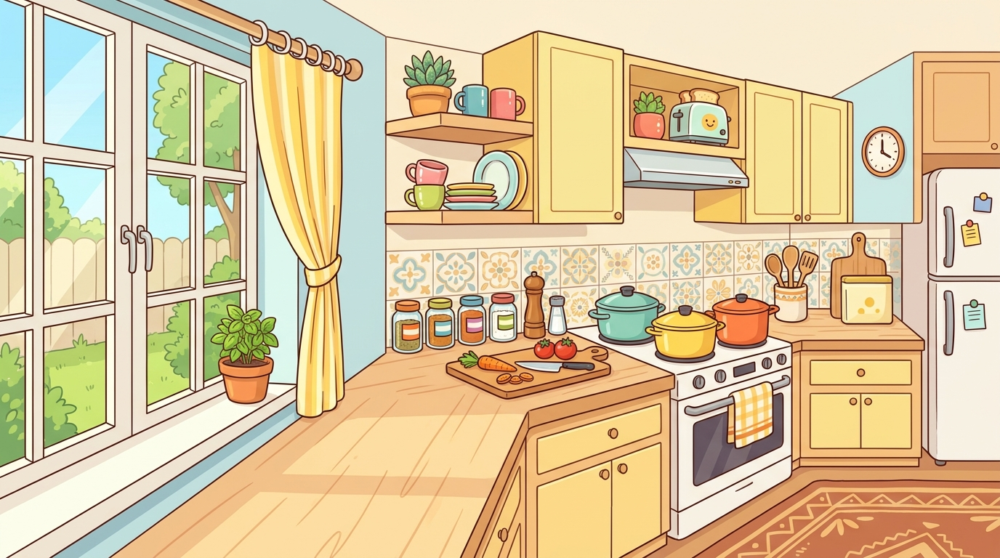
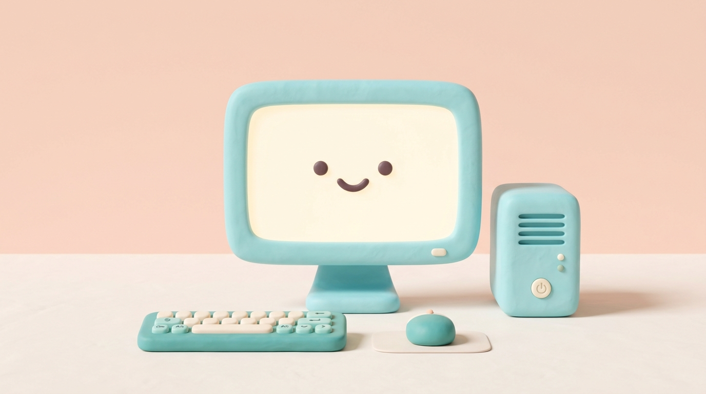

Karya.
Experimental Works
Kumpulan karya digital eksperimental — game edukasi, laboratorium maya, dan media pembelajaran interaktif. Masih dalam proses, tapi dibuat sepenuh hati.
Educational games, virtual labs, and interactive learning media. Unfinished, but made with full intention.
Ruang Eksplorasi & Prototipe
SandboxHalaman ini adalah ruang uji coba tempat ide dan rasa ingin tahu diwujudkan menjadi pengalaman belajar interaktif. Sebagian karya sudah siap dijelajahi secara utuh, sementara yang lain terus bertumbuh dan disempurnakan.
A digital sandbox where curiosity and ideas turn into interactive learning experiences. Some works are fully playable, while others continue to evolve.
Daftar Karya / Works
5 karya digital · 5 experimental digital works

Chef Algorithm: Lomba Masak Digital
Chef Algorithm: The Digital Cooking Contest
Petualangan logika algoritma melalui analogi memasak nusantara. Selesaikan misi sekuensial, percabangan IF-ELSE, perulangan Loop, hingga dekomposisi paralel dalam 4 level misi.
A logic algorithm adventure through Indonesian cooking analogies. Complete sequential missions, IF-ELSE branching, loops, and parallel decomposition across 4 levels.

Lab Perakitan Komputer & Biner
Computer Assembly & Binary Virtual Lab
Simulasi praktikum mandiri merakit perangkat keras (arsitektur Von Neumann), sakelar biner 8-bit, dan representasi sub-piksel warna RGB. Dilengkapi audio POST boot sequence nyata.
Self-directed lab simulation: assemble PC hardware (Von Neumann arch), toggle 8-bit binary switches, and explore RGB sub-pixel color mixing — with real POST boot audio.

MPI Jaringan Komputer
Interactive Learning Media: Computer Networks
Memvisualisasikan mekanisme pengiriman paket data melewati router secara real-time. Dilengkapi simulasi interaktif, narasi audio edukatif, dan kuis formatif evaluasi mandiri.
Visualizes how data packets travel across routers in real-time. Includes interactive simulation, educational audio narration, and a self-assessment formative quiz.
MPI Berpikir Komputasional
Interactive Learning Media: Computational Thinking
Eksplorasi 4 pilar berpikir komputasional (dekomposisi, pengenalan pola, abstraksi, algoritma) melalui studi kasus IoT Smart Home interaktif yang menyenangkan.
Explore the 4 pillars of computational thinking (decomposition, pattern recognition, abstraction, algorithm) through an engaging interactive IoT Smart Home case study.
MPI Sistem Komputer
Interactive Learning Media: Computer Systems
Media pembelajaran interaktif untuk memahami komponen-komponen sistem komputer, cara kerja CPU, memori, dan perangkat I/O secara visual dan simulatif.
Interactive learning media for understanding computer system components, how CPUs work, memory, and I/O devices — visually and through simulation.